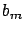
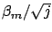

Siguiente: Estimación Numérica: Métodos QMC
Subir: Algoritmos y cálculos implementados
Anterior: Verificación de línea de
Índice General
Resolución de la integral de Vogler
En la sección 4.3.1 se presentó la solución propuesta por
Vogler para el cálculo de atenuación por múltiples cuchillos, quien
plantea que la misma puede ser obtenida mediante la resolución de la
integral (4.3). Para dicha resolución no se
aplicará el método propuesto por el propio Vogler, sino que se
evaluará la integral directamente utilizando técnicas numéricas
(basándose en [47]), por considerarse un método más
sencillo.
Si realizamos el siguiente cambio de variable:
La integral (4.3) se transforma en:
donde
El parámetro  se define como
; por lo tanto a
partir de ahora se evaluará la importancia de un cuchillo
directamente por su asociado.
Antes de aplicar los métodos numéricos elegidos al caso de esta
integral en particular, sería conveniente realizar una breve
explicación de los mismos, ver los conceptos detrás de ellos,
algunas propiedades y algunas implementaciones particulares.
Subsecciones
Siguiente: Estimación Numérica: Métodos QMC
Subir: Algoritmos y cálculos implementados
Anterior: Verificación de línea de
Índice General
SAPO